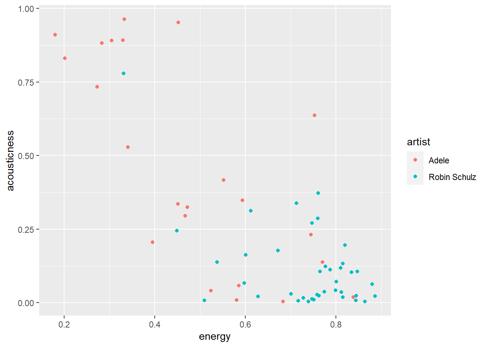
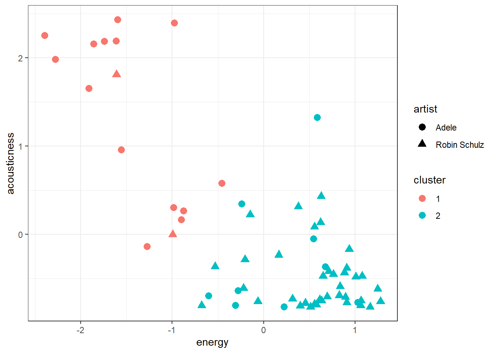
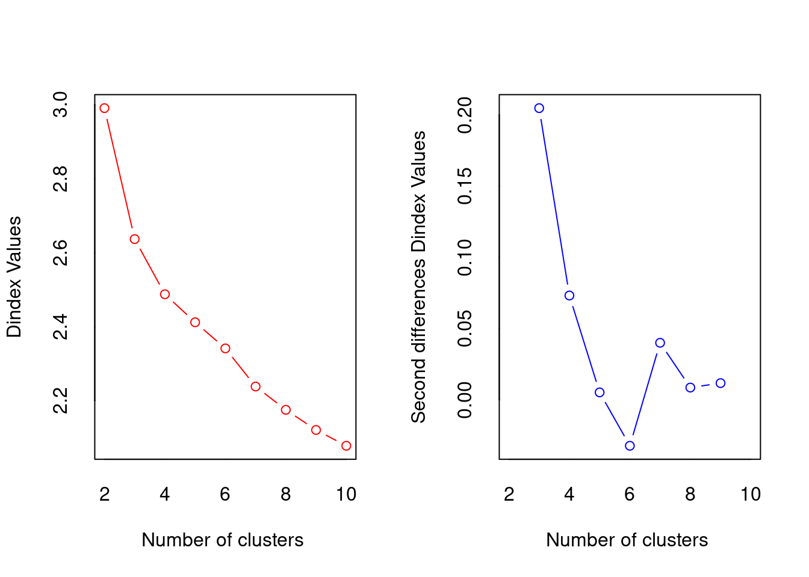
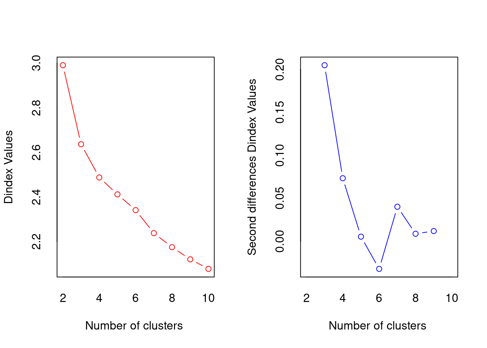
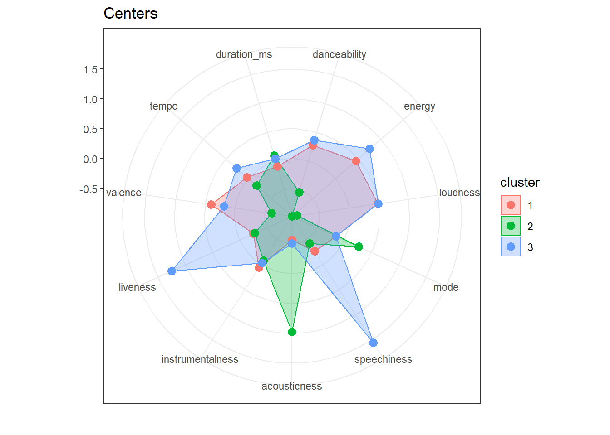
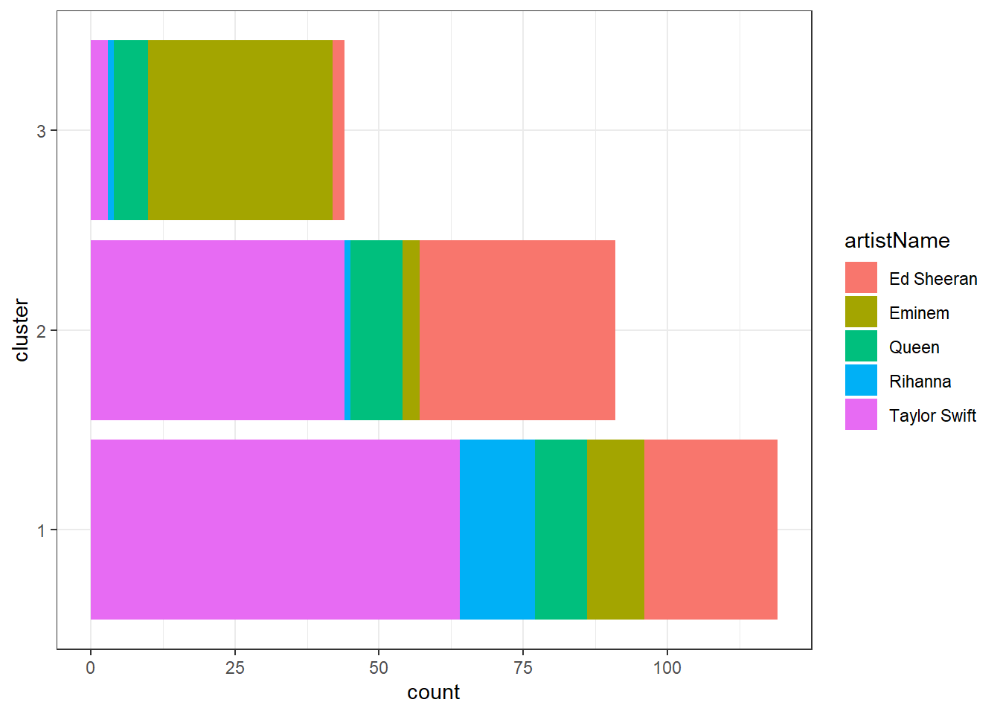

9 Cluster analysis
In progress

In the previous chapter on factor analysis we tried to reduce the number of variables or columns by identifying underlying dimensions. In order to do so we exploited the fact that some items are highly correlated and therefore might represent the same underlying concept (e.g., health benefits or social benefits). Similarly, in cluster analysis we again do not distinguish between dependent and independent variables. However, in the case of cluster analysis we do not try to reduce the number of variables but the number of observations by grouping similar ones into “clusters”. What exactly defines “similarity” depends on the use case. In the case of music audio features of songs might be used to identify clusters of similar songs (similar to the genre classification) which can be used for recommendation systems. Other use cases are customer segmentation and anomaly (e.g., fraud) detection.
Let’s try to create a recommendation system using track features. In our data we have the ISRC, name of the track, name of the artist and audio features of the track. We are going to use the audio features to cluster tracks together such that given one track we can easily identify similar tracks by looking at which cluster it belongs to.
load(url("https://github.com/WU-RDS/MRDA2021/raw/main/trackfeatures.RData"))
# remove duplicates
tracks <- na.omit(tracks[!duplicated(tracks$isrc),
])To get an idea of how clustering might work let’s first take a look at just with two variables, energy and acousticness, and two artists, Robin Schulz and Adele. We immediately see that Adele’s songs are more to the top left (high acousticness, low energy) whereas Robin Schulz’s songs are mostly on the bottom right (low acousticness, high energy).
library(ggplot2)
library(stringr)
robin_schulz <- tracks[str_detect(tracks$artistName,
"Robin Schulz"), ]
robin_schulz$artist <- "Robin Schulz"
adele <- tracks[str_detect(tracks$artistName, "Adele"),
]
adele$artist <- "Adele"
example_tracks <- rbind(robin_schulz, adele)
ggplot(example_tracks, aes(x = energy, y = acousticness,
color = artist)) + geom_point()
9.1 K-Means
One of the most popular algorithms for clustering is the K-means algorithm. The “K” stands for the number of clusters that are specified as a hyperparameter (more on how to set that parameter later). The algorithm then tries to separate the observations into K clusters such that the variance of the features (e.g., our audio features) is minimized. Therefore, it is important to scale all variables before performing clustering such that they all contribute equally to the distance between the observations. Intuitively the algorithm groups observations by iteratively calculating the mean or center of each cluster, assigning each observation to the cluster with the closest mean and re-calculating the mean… The algorithm has “converged” (i.e., is done) when the assignments no longer change.
Let’s try it out with our two artists. In order to perform clustering we first have to remove all missing values from the used variables as for those we cannot calculate distances. Because we know that there are two artists in the sample we will start with two clusters.
library(cluster)
tracks_scale <- data.frame(artist = example_tracks$artist,
energy = scale(example_tracks$energy), acousticness = scale(example_tracks$acousticness))
tracks_scale <- na.omit(tracks_scale)
kmeans_clusters <- kmeans(tracks_scale[-1], 2)
kmeans_clusters$centers## energy acousticness
## 1 -1.43946637 1.32346535
## 2 0.50068396 -0.46033577The kmeans function returns, among other statistics, the centers of each cluster and a cluster identifier for each observation which we can add to our original data. In our case one cluster’s center is rather low in energy and high acousticness and the second one has higher energy and lower acousticness.
In our plot we can add a color for each cluster and a different marker shape for each artist. We observe that cluster 1 corresponds mostly to Robin Schulz songs and cluster 2 mostly to Adele. Alternatively we can also look at the counts in each cluster per artist using the table function.
tracks_scale$cluster <- as.factor(kmeans_clusters$cluster)
ggplot(tracks_scale, aes(x = energy, y = acousticness,
color = cluster, shape = artist)) + geom_point(size = 3)
##
## 1 2
## Adele 14 9
## Robin Schulz 2 37In the previous example it was easy to set the number of clusters. However, if we use all artists in our data the best value for “K” is not immediately obvious. Surely some artists should be in the same cluster. We can user the NbClust package to determine the best number of clusters according to various indices (see ?NbClust). First we scale all our variables and then we use the scaled versions to determine “K”. To make computations faster we will use songs by 6 famous artists. Then we count how many indices would choose a certain number of clusters. The two best candidates are 3 clusters, chosen by 13 indices and 2 clusters, chosen by 5 indices.
## Warning: Paket 'NbClust' wurde unter R Version 4.0.3 erstelltfamous_artists <- c("Ed Sheeran", "Eminem", "Rihanna",
"Taylor Swift", "Queen")
famous_tracks <- tracks[tracks$artistName %in% famous_artists,
]
famous_tracks_scale <- scale(famous_tracks[4:ncol(famous_tracks)])
set.seed(123)
opt_K <- NbClust(famous_tracks_scale, method = "kmeans",
max.nc = 10) 

##
## 0 2 3 4 8 10
## 2 5 13 1 1 4We can now proceed as before with running the k-means algorithm. Looking at the centers for each of the clusters could give us an indication for the types of songs we can expect in each of them (recall that they are assigned based on their distance to the center).
## danceability energy loudness mode speechiness acousticness
## 1 0.27583013 0.45262138 0.48533019 -0.14613775 -0.25764006 -0.56189652
## 2 -0.53855482 -0.95664951 -0.87423829 0.26329095 -0.41476830 0.97728432
## 3 0.36783417 0.75439003 0.49548619 -0.14929736 1.55461550 -0.50152699
## instrumentalness liveness valence tempo duration_ms
## 1 0.062663241 -0.25242508 0.40120798 0.037899761 -0.090474590
## 2 -0.068167189 -0.27281478 -0.61580855 -0.177610227 0.097542547
## 3 -0.028493444 1.24692568 0.18851883 0.264828616 0.042956919famous_tracks$cluster <- as.factor(kmeans_tracks$cluster)
ggplot(famous_tracks, aes(y = cluster, fill = artistName)) +
geom_bar() + theme_bw()
##
## 1 2 3
## Ed Sheeran 23 34 2
## Eminem 10 3 32
## Queen 9 9 6
## Rihanna 13 1 1
## Taylor Swift 64 44 3ed <- famous_tracks[famous_tracks$artistName == "Ed Sheeran",
]
ggplot(ed, aes(x = energy, y = valence, color = cluster)) +
geom_point() + theme_bw()